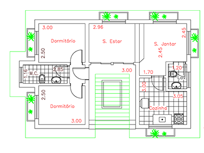

Publicado em:
Quais São as Dimensões Mínimas Recomendáveis para Cômodos e Vãos em um Projeto
Ao projetar uma casa ou apartamento, não basta apenas pensar na estética. É fundamental considerar as dimensões mínimas recomendadas para cômodos e vãos, garantindo conforto, segurança e funcionalidade no dia a dia.
Essas medidas são orientadas por boas práticas de arquitetura e, em alguns países, por normas técnicas como a NBR 15575 (Desempenho de Edificações) e a NBR 9077 (Saídas de Emergência em Edifícios) no Brasil.
1. Dimensões Mínimas para Cômodos
- Sala de estar: mínimo de 12 m² (3,00 m x 4,00 m).
- Sala de jantar: mínimo de 9 m² (3,00 m x 3,00 m).
- Cozinha: mínimo de 6 m², com largura mínima de 1,80 m.
- Quarto de casal: mínimo de 10 m² (2,70 m x 3,70 m).
- Quarto de solteiro: mínimo de 8 m² (2,40 m x 3,30 m).
- Banheiro social: mínimo de 2,50 m², com largura mínima de 1,20 m.
- Área de serviço/lavanderia: mínimo de 3 m², largura mínima de 1,50 m.
üí° Essas medidas são consideradas confortáveis para uma resid√™ncia padrão. Projetos menores podem ser aceitos em habita√ß√µes de interesse social, desde que respeitem ergonomia e circula√ß√£o.
2. Altura Mínima dos Cômodos
- Ambientes de permanência prolongada (salas, quartos, cozinhas): 2,50 m.
- Banheiros, corredores e áreas de serviço: 2,30 m.
3. Dimensões Mínimas para Vãos de Porta
- Porta de entrada principal: 0,80 m a 0,90 m.
- Porta de quartos e salas: mínimo de 0,70 m.
- Porta de banheiros: mínimo de 0,60 m (ideal 0,70 m para acessibilidade).
- Porta de cozinha e área de serviço: 0,80 m.
üëâ Para acessibilidade (NBR 9050), recomenda-se portas de 80 cm ou mais.
4. Dimensões Mínimas para Vãos de Janelas
As janelas devem garantir iluminação e ventilação natural. Recomenda-se que a área de ventilação seja de, no mínimo, 1/8 da área do piso do ambiente.
- Quarto de 10 m² → janela mínima de 1,25 m².
- Sala de 12 m² → janela mínima de 1,50 m².
A altura mínima do peitoril deve ser de 1,10 m para segurança.
5. Circulações e Corredores
- Largura mínima de corredores internos: 0,90 m.
- Largura mínima de escadas residenciais: 0,80 m (ideal 0,90 m).
- Degraus: altura entre 16 e 18 cm, largura entre 28 e 30 cm.
Conclusão
As dimensões mínimas recomendáveis para cômodos e vãos garantem conforto, segurança e funcionalidade em qualquer projeto. Seguir essas medidas valoriza o imóvel, facilita a circulação e proporciona ambientes mais agradáveis e bem iluminados.
üìè Antes de iniciar a obra, consulte um arquiteto ou engenheiro para adequar seu projeto √†s normas t√©cnicas e necessidades da sua fam√≠lia.
üëâ Veja tamb√©m: Quantos metros quadrado de piso cobre um saco de cimento